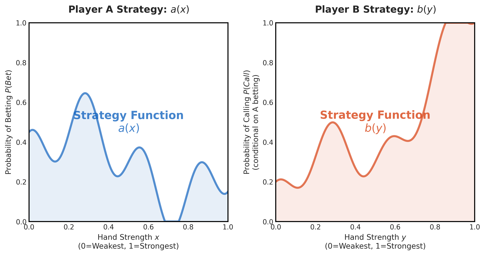

在上一篇文章中，我們探討了單向資訊不對稱（Player A 全盲、Player B 全知）的極端狀況，並推導出了最佳詐唬與跟注頻率。我們利用了「雙曲面」與「翹翹板」的心智模型，解釋了雙方如何在這個資訊落差中尋找平衡。
然而，現實的德州撲克遠比那個模型複雜。為了更接近真實，我們需要引入另一個維度的簡化模型——「比大小遊戲」（High Card Game）。
遊戲規則
讓我們設定一個標準的賽局環境：
- 玩家：Player A 與 Player B。
- 底池 (Pot)：\(P\) 元（可視為雙方起始強迫下注 \(P/2\)）。
- 發牌：從一副撲克牌中，雙方各發一張牌，彼此皆看不到對方的牌（資訊對稱且隱蔽）。
- 攤牌時勝負判定：
- 數字較大者獲勝，贏走底池。
- 若數字相同則平手，雙方拿回各自的下注。
- 下注流程：
- 設定每次下注金額為 \(B\) 元。
- Player A（先手）：可以選擇 下注 (Bet) 或 過牌 (Check)。
- 若 Player A 選擇 過牌 (Check)，則輪到 Player B 行動，B 同樣可以選擇 下注 或 過牌。
- 若 Player A 選擇 下注 (Bet)，則輪到 Player B 行動，B 可以選擇 跟注 (Call) 或 棄牌 (Fold)。
一般是這樣的。
不過這對現在的我們來說還是太複雜了，所以我們再做更進一步的簡化：
假設 若 Player A 選擇 過牌 (Check)，則 Player B 也必須 過牌 (Check)。
也就是說只有 Player A 可以進攻，Player B 只能被動回應。
這樣一來，遊戲流程就變成：
看起來 Player A 應該有巨大的優勢，不只是先手，而且 Player B 還不能主動進攻。
我們今天就要來算算，Player A 究竟能拿到多少優勢，以及 Player B 又該如何防守呢？
這是雙方資訊完全對稱 (全盲)，單純在討論這種 bet-call-check 的遊戲規則機制下，甚麼是最佳策略的分析。
今天用的方法不算太異想天開，稍微有一點變分法的概念即可。但是結果卻非常有趣。
連續的版本 Von Neumann Game
我們其實可以考慮一個更一般化的版本。
兩人各自從 \([0,1]\) 區間內抽取一個數字作為「牌面」，數字越大代表牌越強。
抽取的機率密度是均勻分布。
其他規則與上面相同。
這個版本其實是 John von Neumann 在 1928 年發表的經典論文 “Zur Theorie der Gesellschaftsspiele” 中所提出的「連續版本」(Continuous Version) 的博弈模型。
我們今天主要分析這個版本，但大家可以隨時切換，想像若是離散的版本推導會變成怎樣。
策略表示法
什麼是一個 Player A (或 B) 的「策略」呢？
就是要完整描述，Player A (或 B) 在每一種可能的「狀況」下，會採取什麼行動 (的機率分布)。
因為這個遊戲極其簡化，Player A 和 B 都各只有一個決策點 Figure 1。
而這遊戲會面臨的狀況就是「自己拿到的牌是什麼數字」。完全看不到對手的牌。(看對手的面部表情算是 side information，不在這個模型裡面討論)
- Player A:
- 假設拿到的牌面是 \(x \in [0,1]\)。
- Player A 的策略可以表示為一個函數 \(a(x)\)，代表當拿到牌面 \(x\) 時，Player A 選擇 下注 (Bet) 的機率。
- Player B:
- 假設拿到的牌面是 \(y \in [0,1]\)。
- Player B 的策略可以表示為一個函數 \(b(y)\)，代表當拿到牌面 \(y\) 時，並且 Player A 已經下注 \(B\)，Player B 選擇 跟注 (Call) 的機率。
- (注意，若 Player A 選擇過牌，則 Player B 也必須過牌，這個情況就跟 Player B 的策略無關了)

當兩個 Player 的策略給定後，就可以算這個 game 的期望值了。
因為是個零和遊戲 (zero-sum game)，或者精確來說 和是 \(P\)。所以只要關注 Player A 的期望值 \(\mathbb{E}[\text{Payoff}_A]\) 即可，Player B 的期望值就是 \(\mathbb{E}[\text{Payoff}_B] = P - \mathbb{E}[\text{Payoff}_A]\)。
Player A 的期望值
如圖Figure 1 所示，遊戲有三種結局，我們寫個表來看看他們分別對 Player A 的 payoff 是多少：
| 結局 1 (強制攤牌) |
結局 2 (A 下注，B 跟注) |
結局 3 (A 下注，B 棄牌) |
|
|---|---|---|---|
| 若 \(x > y\) | \(P\) | \(P + B\) | \(P\) |
| 若 \(x = y\) | \(P/2\) | \(P/2\) | \(P\) |
| 若 \(x < y\) | \(0\) | \(-B\) | \(P\) |
稍微解釋一下:
- 比方說 結局2 (\(x>y\)) 的情況，Player A 最終會拿到的是 \(P+2B\)，但其中有 \(B\) 是 Player A 自己下注的錢，而 此刻還沒被放進去，所以 payoff 只算 \(P + B\)。
- 當然，池底 \(P\) 也有一半是 Player A 的錢。但那是已經放進去的，是 沉默成本 的概念，所以不會在 payoff 裡面扣掉。
- 若最終分析出來，Player A 的期望值小於 \(P/2\)，此時把放池底的 \(P/2\) 算進去，整體期望值變成負的了! 那 Player A 就 不應該參與這個遊戲。也就是退回到「玩/不玩」 這個遊戲這個決策節點來思考，不玩的期望值就是單純的 0。當然，如果不玩會被女朋友罵的話，那就另當別論了。所以這個一個 local optimum 的分析
因為是連續的均勻分布，所以 \(x = y\) 的機率為 0，我們先忽略不計。但若是離散版本，則需要把平手的情況也考慮進去，因為此時若是結局 3，Player A 仍然賺到。

積分表示法:
當給了 \(a(x)\) 與 \(b(y)\) 後，這個遊戲的期望值就固定下來了: \[ \begin{aligned} &\mathbb{E}[\text{Payoff}_A] := \mathcal{L}(a(x), b(y)) \\ &= \int_0^1 \int_0^1 \Bigg[ \\ &\quad (1 - a(x)) \cdot P \cdot \mathbb{1}_{x>y} &\qquad\text{(結局 1: Player A check)} \\ &\quad + a(x) \cdot b(y) \cdot ( (P + B) \cdot \mathbb{1}_{x>y} + (-B) \cdot \mathbb{1}_{x<y} ) &\qquad\text{(結局 2: Player A bet, Player B call)} \\ &\quad + a(x) \cdot (1 - b(y)) \cdot P &\qquad\text{(結局 3: Player A bet, Player B fold)} \\ &\quad \Bigg] dy dx \\ \end{aligned} \]
我們用了 指示函數(indicator function): \(\mathbb{1}_{x>y}\) 來表示「牌面大小比較」的條件。當然，也可以寫成分段的積分，但這樣寫起來，簡直像是直接從上面的表格搬下來的一樣，清楚多了。
我們再寫一次表格形式:
| 結局 1 (強制攤牌) |
結局 2 (A 下注，B 跟注) |
結局 3 (A 下注，B 棄牌) |
|
|---|---|---|---|
| 若 \(x > y\) | \(P\) | \(P + B\) | \(P\) |
| 若 \(x < y\) | \(0\) | \(-B\) | \(P\) |
| 機率密度 | \(1 - a(x)\) | \(a(x) \cdot b(y)\) | \(a(x) \cdot (1 - b(y))\) |
好，現在 \(\mathbb{E}[\text{Payoff}_A] = \mathcal{L}(a(x), b(y))\) 是一個 \(a(x)\) 與 \(b(y)\) 的泛函 (functional)。
回顧 Min-Max 原理，Player A 的任務是調整 \(a(x)\) 來最大化 \(\mathcal{L}\)，而 Player B 的任務是調整 \(b(y)\) 來最小化 \(\mathcal{L}\)。
推導這個 Min-Max 解需要用到變分法的觀念，大概要花 20 分鐘的時間。
但我們先看一下這個式子。
回想上一篇中，調整 \(\alpha\) 與 \(\beta\) 來最大化/最小化期望值的過程。
而現在我們要調整的，變成是無限維度的函數 \(a(x)\) 與 \(b(y)\)。
若是離散版本，則可以把 \(a(x)\) 與 \(b(y)\) 就是定義在有限個點上的向量 (13維向量)，但記得討論相等 \((x=y)\) 的情況。
而我們在 Part2 中用了 Pure Strategy 的線性組合，發現了雙曲面和翹翹板的圖像。
但若要考慮所有 Pure Strategy 的凸包頂點，則是所有取值為 0 或 1 的函數 \(a(x)\) 與 \(b(y)\)，那是 \(2^{\mathbb{R}}\)。那行不通。
所以這邊翹翹板的圖像又變了。
變分法
我們回到 Lagrangian，並嘗試用變分法來解這個 Min-Max 問題。
將 \(a(x)\) 想成已知，我們要找出 Player B 的最佳策略 \(b(y)\) 來最小化 \(\mathcal{L}\)。 重寫這個式子，將關於 \(b(y)\) 的部分提出來: \[ \begin{aligned} \mathcal{L}(a(x), b(y)) = & \int_0^1 \int_0^1 \Bigg[ (1 - a(x)) \cdot P \cdot \mathbb{1}_{x>y} + a(x) \cdot P \\ &\qquad\qquad + \textcolor{red}{b(y)} \cdot \bigg( a(x) \cdot (P + B) \cdot \mathbb{1}_{x>y} + a(x) \cdot (-B) \cdot \mathbb{1}_{x<y} - a(x) \cdot P \bigg) \Bigg] dy dx \\ \end{aligned} \]
如果 \(b(y)\) 要讓 \(\mathcal{L}\) 最小化，則當 \(b(y)\) 乘上的那個東西是負的時候，\(b(y)\) 應該取最大值 1；反之，當那個東西是正的時候，\(b(y)\) 應該取最小值 0。
所以其實 Player B 的最佳策略 \(b(y)\) 會是個 Pure Strategy。
不過稍等一下，裡面那個東西跟 \(x\) 有關，但 \(b(y)\) 只能根據 \(y\) 來決定，所以上述其實是對 \(x\) 取平均的結果，也就是積分掉 \(x\)。
\[ \begin{aligned} \mathcal{L}(a(x), b(y)) = & \int_0^1 \int_0^1 \Bigg[ (1 - a(x)) \cdot P \cdot \mathbb{1}_{x>y} + a(x) \cdot P \Bigg] dy dx \\ &\quad + \int_0^1 \int_0^1 \Bigg[ \textcolor{red}{b(y)} \cdot a(x) \bigg( (P + B) \cdot \mathbb{1}_{x>y} + (-B) \cdot \mathbb{1}_{x<y} - P \bigg) \Bigg] dy dx \\ = & \int_0^1 \int_0^1 \Bigg[ (1 - a(x)) \cdot P \cdot \mathbb{1}_{x>y} + a(x) \cdot P \Bigg] dy dx \\ &\quad + \int_0^1 \textcolor{red}{b(y)} \left( \int_0^1 a(x) \cdot ( (P + B) \cdot \mathbb{1}_{x>y} - B \cdot \mathbb{1}_{x<y} - P )\, dx \right) dy \\ \end{aligned} \]
我們來看看 \(b(y)\) 乘上的那個東西: \[ \begin{align} h(y) := & \int_0^1 a(x) \cdot ( (P + B) \cdot \mathbb{1}_{x>y} - B \cdot \mathbb{1}_{x<y} - P ) \, dx \\ = & \int_0^1 a(x) \cdot ( B \cdot \mathbb{1}_{x>y} - (B+P) \cdot \mathbb{1}_{x<y} ) \, dx \\ = & B \cdot \int_y^1 a(x) \, dx - (P + B) \cdot \int_0^y a(x) \, dx \tag{1}\label{eq:hy_formula} \\ \end{align} \] 也就是說將 \(a(x)\) 小於 \(y\) 的部分乘上 \(-(P+B)\) 後，再加上大於 \(y\) 的部分乘上 \(B\)，然後積分。
這個 \(h(y)\) 會是個遞減函數: \[ h'(y) = - B \cdot a(y) - (P + B) \cdot a(y) = - (P + 2B) \cdot a(y) \leq 0 \] 而初始和末端值分別是: \[ \begin{aligned} h(0) = B \cdot \int_0^1 a(x) \, dx \geq 0 \\ h(1) = - (P + B) \cdot \int_0^1 a(x) \, dx \leq 0 \\ \end{aligned} \]
如圖Figure 4 。
從 \(\eqref{eq:hy_formula}\) 可以看出使 \(h(y^*) = 0\) 的點 \(y^*\)，會滿足面積比公式 \[ \frac{\int_0^{y^*} a(x) \, dx}{\int_{y^*}^1 a(x) \, dx} = \frac{B}{P + B} \tag{2}\label{eq:area_ratio} \]
有了 \(y^*\) 後，可以將 \(h(y)\) 寫成 \[ h(y) = -(P+2B) \int_{y^*}^y a(x) \, dx \tag{3}\label{eq:hy_from_y_star} \]

帶回去 Lagrangian: \[ \begin{aligned} \mathcal{L}(a(x), b(y)) = & \int_0^1 \int_0^1 \Bigg[ (1 - a(x)) \cdot P \cdot \mathbb{1}_{x>y} + a(x) \cdot P \Bigg] dy dx + \int_0^1 \textcolor{red}{b(y)} \cdot \textcolor{green}{h(y)} \, dy \\ = & \frac{P}{2} + P \cdot \int_0^1 \int_0^1 a(x) \cdot \mathbb{1}_{x<y} \, dy dx + \int_0^1 \textcolor{red}{b(y)} \cdot \textcolor{green}{h(y)} \, dy \\ \end{aligned} \]
這時開始使用 Min-Max 原理，來研究 Player B 的最佳進攻策略 \(b(y)\)。
假設 Player B 可以知道 Player A 的策略 \(a(x)\)，根據上面 \(\eqref{eq:area_ratio}\) 算出來的 \(y^*\)，Player B 的最佳策略就是: \[
b(y) = \begin{cases}
0, & y < y^* \\
1, & y > y^* \\
\end{cases}
\]
也就是說在一個閾值 (threshold) \(y^*\) 之下，Player B 全部棄牌；在閾值 \(y^*\) 之上，Player B 全部跟注。聽起來相當的合理。
而這個閾值 \(y^*\) 是由 Player A 的策略 \(a(x)\) 所決定的。其中切分點在將 \(a(x)\) 之面積切分為 \(B:(P+B)\) 的比例。
如果還記得前面的 lesson 4 和 5，跟當時的 bluff-to-value ratio 算出來一樣! 但我們還沒完全搞懂，暫且繼續看下去。
不論 Player A 下注機率分布 \(a(x)\) 是什麼形狀，Player B 的最佳進攻策略是將其分成 \(B:(P+B)\) 的比例的兩個區域，然後大的區域跟注，小的區域棄牌。仔細想想，還真的很不直觀。
對於 \(b(y)\) 另一種寫法其實是: \[
b(y) = \begin{cases}
0, & h(y) > 0 \\
1, & h(y) < 0 \\
\end{cases} \tag{5}\label{eq:b_from_h}
\]
此時 \(\int_0^1 \textcolor{red}{b(y)} \cdot h(y) \, dy\) 取到的最小值就是 \[
\min_{\textcolor{red}{b(y)}} \int_0^1 \textcolor{red}{b(y)} \cdot h(y) \, dy = \int_0^1 \min(0, h(y)) \, dy
\]
那我們來算算右邊是多少(只跟 \(a(x)\) 有關): \[
\begin{align}
\int_0^1 \min(0, h(y)) \, dy
= & \int_{y^*}^1 h(y) \, dy \\
= & \int_{y^*}^1 \left( - (P + 2B) \int_{y^*}^y a(x) \, dx \right) dy \\
= & - (P + 2B) \int_{y^*}^1 \left( \int_{y^*}^y a(x) \, dx \right) dy \\
= & - (P + 2B) \int_{y^*}^1 a(x) \left( \int_x^1 dy \right) dx \\
= & - (P + 2B) \int_{y^*}^1 a(x) (1 - x) \, dx \tag{4}\label{eq:min_b_integral}
\end{align}
\] 
帶回去 Lagrangian: \[ \begin{align} \min_{b(y)} \mathcal{L}(a(x), b(y)) = & \frac{P}{2} + P \cdot \int_0^1 \int_0^1 a(x) \cdot \mathbb{1}_{x<y} \, dy dx + \int_0^1 \min(0, h(y)) \, dy \\ = & \frac{P}{2} + P \cdot \int_0^1 a(x) \left( \int_x^1 dy \right) dx - (P + 2B) \int_{y^*}^1 a(x) (1 - x) \, dx \\ = & \frac{P}{2} + P \cdot \int_0^1 a(x) (1 - x) \, dx - (P + 2B) \int_{y^*}^1 a(x) (1 - x) \, dx \\ = & \frac{P}{2} + P \cdot \left(\int_0^{y^*} a(x) (1 - x) \, dx \right) - 2B \cdot \left(\int_{y^*}^1 a(x) (1 - x) \, dx \right) \\ \end{align} \]
直覺地來看一下這個式子。第一項 \(\frac{P}{2}\) 是雙方放入的籌碼，後面兩項一正一負。注意其中的 \(y^*\) 雖然是 Player B 的策略，但是是根據 \(a(x)\) 來決定的，也就是把 \(a(x)\) 底下的面積切分成 \(B:(P+B)\) 的比例。假設固定這個 \(y^*\) ，
- 第二項是正的，代表 在 \(\int_0^{y^*} a(x)\) 面積 固定之下，我們要最大化 \(\int_0^{y^*} a(x) (1 - x) \, dx\)，也就是把 \(a(x)\) 往左邊 (小牌面) 集中。
- 第三項是負的，代表 在 \(\int_{y^*}^1 a(x)\) 面積 固定之下，我們要最小化 \(\int_{y^*}^1 a(x) (1 - x) \, dx\)，也就是把 \(a(x)\) 往右邊 (大牌面) 集中。
所以結果變成

但我們目前只知道比例 (\(B:(P+B)\))，還有形狀 (往兩邊集中)，卻不知道具體值是多少。 所以要解 \(a(x)\) 的 boundary 位置。
假設 boundary 分別在 \(Bt\) 和 \(1-(P+B)t\)，則 \[ \begin{align} \min_{b(y)} \mathcal{L}(a(x), b(y)) = & \frac{P}{2} + P \cdot \left(\int_0^{Bt} (1 - x) \, dx \right) - 2B \cdot \left(\int_{1-(P+B)t}^1 (1 - x) \, dx \right) \\ = & \frac{P}{2} + P \cdot \left( Bt - \frac{(Bt)^2}{2} \right) - 2B \cdot \left( \frac{(P+B)^2t^2}{2} \right) \\ \end{align} \]
這是一個 \(t\) 的二次函數，要最大化它，對 \(t\) 微分並令其為零: \[ \begin{align} &P \cdot \left( B - B^2 t \right) - 2B \cdot (P + B)^2 t = 0 \\ \implies&\, t = \frac{P}{2P^2 + 5BP + 2B^2} = \frac{P}{(2P+B)(P+2B)} \\ \implies&\, \text{Left Boundary} = Bt = \textcolor{darkred}{\frac{BP}{(2P+B)(P+2B)}} \\ &\, \text{Right Boundary} = 1 - (P + B)t = \textcolor{darkred}{\frac{P^2+4BP+2B^2}{(2P+B)(P+2B)}} \\ \end{align} \]
這就是 Player A 的最佳策略 \(a(x)\) 的具體值了: \[ a(x) = \begin{cases} 1, & 0 \leq x < \frac{BP}{(2P+B)(P+2B)} \\ 0, & \frac{BP}{(2P+B)(P+2B)} \leq x \leq \frac{P^2+4BP+2B^2}{(2P+B)(P+2B)} \\ 1, & \frac{P^2+4BP+2B^2}{(2P+B)(P+2B)} < x \leq 1 \\ \end{cases} \]
而遊戲的 Game Value (期望值) 則是帶回去算: \[ \begin{align} \max_{a(x)} \min_{b(y)} \mathcal{L}(a(x), b(y)) = & \frac{P}{2} + \frac{(PB)^2}{2(PB^2+2B(P+B)^2)} \\ = & \frac{P}{2} + \frac{P^2 B}{2(2P+B)(P+2B)} \\ \end{align} \]
這也就是一開始提到的 Player A 的超額報酬!! 等於池底的一半，加上一個正數。
小總結:
這是 Player A 的最佳防守策略。若 Player A 固定這個策略，那根據 \(\eqref{eq:b_from_h}\)，Player B 的策略在 \[ \frac{BP}{(2P+B)(P+2B)} < y < \frac{P^2+4BP+2B^2}{(2P+B)(P+2B)} \] 是如何都無所謂! 因為此時的 \(h(y) = 0\)。
回想一下剪刀石頭布，當對手強力防守時，我們有較大的容錯空間，不一定要準準的玩在 GTO 上，最終期望值也一樣。但其實 Player B 若要強力防守，那麼只有剛好一個 \(y^*\)，否則其他的 \(y\) 都會露出破綻，讓 Player A 有剝削的空間。